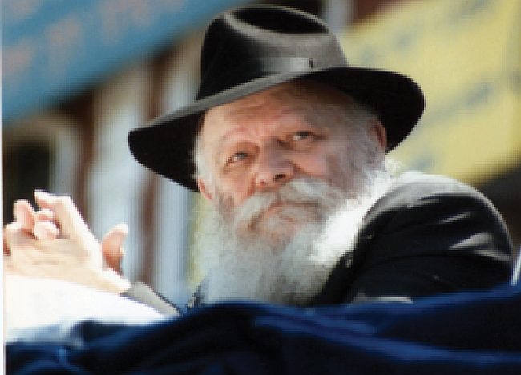

רבינו הזקן מבהיר בצורה ברורה ביותר כיצד יהודי יכול ליישם את יהדותו בצורה כזו שהי
רבינו הזקן מבהיר בצורה ברורה ביותר כיצד יהודי יכול ליישם את יהדותו בצורה כזו שהיהדות הופכת להיות משמעותית בחייו, ובהמשך גורמת לו להיות מאושר ושמח. אולם, צריך להבין כיצד פועל התהליך >> מתוך התוועדות מופלאה העוסקת בחיבור תורת החסידות לחוויית קיום המצוות בחיי היום יום שלנו
רבינו הזקן מבהיר בצורה ברורה ביותר כיצד יהודי יכול ליישם את יהדותו בצורה כזו שהיהדות הופכת להיות משמעותית בחייו, ובהמשך גורמת לו להיות מאושר ושמח. אולם, צריך להבין כיצד פועל התהליך >> מתוך התוועדות מופלאה העוסקת בחיבור תורת החסידות לחוויית קיום המצוות בחיי היום יום שלנו
הרב וועלוועל בוטמן
ווסטצ’סטר, ניו יורק

בלוח היום–יום של יום ח”י כסלו - היום האחרון של השנה בלוח השנה החסידי, כותב הרבי “גוט יום טוב, לשנה טובה בלימוד החסידות ובדרכי החסידות, תכתבו ותחתמו”.
י”ט כסלו נחוג במשך שנים רבות, ולא רק בקרב חסידי חב”ד. מי שמסתובב בין חסידי פולין, ימצא אותם חוגגים את י”ט כסלו.
ביום הזה, יותר ממאתיים שנה, חסידים מתאספים, בתקופות קלות ואף בתקופות קשות ומסוכנות - וחוגגים את היום, לעתים תוך סיכון אמיתי לחייהם.
בפתגם הפותח את לוח “היום יום” שהרבי חיבר, הרבי מציין את ההילולא של הרב המגיד, ואח”כ כותב: אדמו”ר הזקן יצא לחירות ממאסרו הראשון - יט כסלו, ג’ וישב, תקנ”ט, לפנות ערב.
בימי הפורים, כולנו הולכים לבית הכנסת כדי לקרוא את מגילת אסתר. גם בזמנו של אדמו”ר הזקן, לאחר הגאולה, חסידים חיברו מגילה שנקראה בשם “מגילת יט כסלו”. הם חפצו שאדמו”ר הזקן יאשר את קריאת מגילת י”ט כסלו בכל שנה ושנה, כפי שעושים בפורים, כדי שנקרא בכל שנה את פרטי המאורע מתחילת המאסר ועד יום החירות.
אמנם, אדמו”ר הזקן לא הסכים לכך באופן רשמי, אבל הוא כתב כך: “זה היום יקבע למועד תמידי בישראל, אשר בו יתגדל ויתקדש שמה רבא ויתעוררו אלפי לבבות ישראל בתשובה ועבודה שבלב”.
השאיפה שאדם הכי רוצה בחייו
לו הייתי מבקש מכם היום להגדיר במילה אחת בלבד, מה החברה האנושית המודרנית חפצה יותר מכל, ומה כל אחד מכם היה מבקש בארבע עיניים אילו רק היו נותנים לו את האפשרות - מה הייתם עונים?
על פי הסטטיסטיקה, המילה שעלתה יותר מכל מילה אחרת היא “שמחה”. אין דבר שאדם רוצה בו יותר משמחה - להיות שמח!
אך מהי שמחה? התשובה אינה אחידה; כל יחיד יגדיר את השמחה בצורה שונה.
אדמו”ר הזקן בספר התניא מלבן את נושא הרגש של אדם בעבודת השם. בעמוד השער של ספר התניא, מציג אדמו”ר הזקן רעיון מאד מהותי ומרכזי: כתוב בפסוק “כי קרוב אליך הדבר מאוד בפיך ובלבבך לעשותו”. שתיים מתוך שלוש הדרכים - ‘פיך - דיבור, ולעשותו - מעשה’, הם די קלים לביצוע.
גם אם אני לא במצב רוח הכי מרומם, אפשר להתפלל; פשוט אומרים את מילות התפילה. כך גם בעשיית המצוות. גם ללא חשק או מצב רוח, פשוט מקיימים את המצווה הרלוונטית - אם בנענוע לולב, אם בהדלקת נרות שבת ובכל מצווה מעשית אחרת. פשוט עושים.
אם כן, איפה עיקר הקושי? ה’בלבבך’ מהווה בעיה, כי צריכים להרגיש בלב, והפסוק אומר שזה קרוב וקל לאהוב ולהפיק אושר מעצם היותנו יהודים.
האמנם?
אם נערוך סקר ונשאל אנשים האם יהדותם גורמת להם לשמחה, נמצא שרבים יענו בשלילה. אידישקייט אינו גורמת להם להיות מאושרים, בפרט אם הם אינם חסידים. הם יאמינו ביהדות ואף יקיימו את המצוות, אבל האם הם באמת מרגישים שהם שמחים ביהדותם?
זוהי שאלת אדמו”ר הזקן מיד בפתיחת הספר, ובעצם, התשובה היא ה”מעשה בפועל”, ה”בכן” של כל ספר התניא. ספר התניא מעניק ליהודי מסלול ודרך להשגת ה’בלבבך’ - איך לגרום שהלב ישמח ויהנה מקיום מצוות ומלימוד תורה.
כל מי שמבקר בנמל התעופה, יכול לראות שני דברים מעניינים: אם תבקרו בבנין קבלת הנוסעים, תצפו במחזה הבא: אנשים מגיעים מכל קצווי תבל, מקבלי פניהם, בני משפחה אהובים, מחכים להם מאחורי המחסום, וברגע שהם קולטים את מראה יקיריהם, הם מתחילים לקפוץ משמחה. הם עוברים את המחסום ונופלים לזרועות יקיריהם.
באותו נמל תעופה יש אגף נפרד לטיסות יוצאות. רואים אנשים עומדים בתור, משוחחים ביניהם בקולות שקטים, ועל פניו הכל נראה רגוע ושליו. בהמשך המסלול ישנו פקח ששואל את הנוכחים מי ומי הנוסעים, ומונע מהמלווים להיכנס לשטח הפתוח לנוסעים בלבד.
ושוב, הסצנה מאולם מקבלי הפנים חוזרת על עצמה, אבל עם שינוי קטן: במקום חיבוקים וחיוכים רחבים, הם דומעים! אומרים ‘שלום, שלום’ שוב ושוב, מתחבקים ובוכים!
מה קרה? מה השתנה? הרי זה אותו נמל תעופה. לכאורה הפעולה דומה - חיבוק ונישוק… מדוע במקום אחד יש צהלה ושמחה ובמקום השני עצב ודמעות?
התשובה מובנת מאליה. האם אני מחבק את האדם כי אני מקבל את פניו, או האם אני מחבקו כי אני אוהב אותו ולא אתראה אתו למשך תקופה ארוכה?
אדמו”ר הזקן בספר התניא מגדיר את התופעה בשם “דעת”. היכולת לקחת רעיון שנראה אותו דבר, והחלתו (יישומו) בצורה הנכונה. הרעיון יגרום לצחוק אצל האחד, ואילו אצל השניה התנהגות דומה תגרום לדמעות ובכי. מדוע? בגלל שלהם החוויה נצפית כיישום אחר.
ילד שיצפה בשני המחזות, ירגיש ששתי החוויות דומות במדויק, אולם מבוגר יבין את ההבדל ביניהם. כאן אומרים ‘שלום’ ו’ברוכים הבאים’; שם אומרים ‘שלום’ ו’להתראות’. זה הפירוש של המילה “דעת” - חלות, יישום.
רבינו הזקן מבהיר בצורה ברורה ביותר כיצד יהודי יכול ליישם את יהדותו בצורה כזו שהיהדות הופכת להיות משמעותית בחייו, ובהמשך גורמת לו להיות מאושר ושמח. אולם, צריך להבין כיצד פועל התהליך.
י”ט כסלו נותן כוחות
הרבי פותח את לוח ‘היום יום’ עם קטעים ממכתבו של אדמו”ר הרש”ב: “..יט כסלו .. החג אשר פדה בשלום נפשנו ואור וחיות נפשנו ניתן לנו, היום הזה הוא ראש השנה לדא”ח אשר הנחלינו אבותינו הקדושים זצוקלל”ה נ”ע זי”ע, והיא היא תורת הבעש”ט ז”ל”.
“זה היום תחילת מעשיך, שלמות הכוונה האמיתית בבריאת האדם עלי ארץ, להמשיך גילוי אור פנימיות תורתינו הקדושה, אשר נמשך ביום הזה בבחינת המשכה כללית על כללות השנה, ועלינו להעיר לבבנו ביום הזה בבחינת חפץ ורצון פנימי ועצמי באמיתת נקודת לבבנו, שיאיר נפשנו באור פנימיות תורתו יתברך’”.
במילים אחרות, הרבי אומר לנו שביום י”ט כסלו יש ליהודי כח להשרות שמחה על עצמו למשך השנה הקרובה.
כאשר מכינים מדורה, זקוקים לשני סוגי עצים: ענפים דקים, ובולי עץ. את שני הסוגים מניחים בערימות נפרדות. מדוע זקוקים לשני סוגי עצים? ומדוע שומרים אותם בשתי ערימות נפרדות?
מי שהדליק מדורה אי פעם יודע את התשובה. הבעיה עם ענפים היא שענפים נדלקים מהר, אבל נשרפים ונגמרים מהר. מצד שני, ישנה בעיה עם בולי העץ; לוקח להם זמן רב עד שהם נדלקים, אך כשזה קורה, הם בוערים זמן רב. לכן, כדי להדליק מדורה מועילה, משתמשים בעירוב של שניהם.
רבינו הזקן משתמש במשל המדורה כדי ללמד את ההבדל בין המח והלב. קל מאוד לעורר את הלב; אם אדם שומע סיפור יפה או בדיחה טובה, יאזין לניגון מרטיט או יראה מראה נחמד, מיד הוא יתלהב ולבו יתמלא השראה. אבל לאחר זמן מה זה יישכח ממנו והחוויה תפוג. ככה פועל הלב, שהוא רגש, הוא מתלקח מהר אך מתפוגג מהר.
אם יהודי יחפוץ להדליק אש שתבער למשך זמן רב, מוכרחים לוודא שגם בולי העץ בוערים.
אדמו”ר הזקן ממשיל את המח האנושי לבול עץ. לא קל להצית בול עץ; לא קל להצית את המח למצב של התעוררות. אבל אדמו”ר הזקן גם נותן לנו טכניקה לעשות זאת - לימוד החסידות!
כאשר לומדים את ספר התניא מתמודדים עם השאלות העצמיות - מדוע אני פה בעולם? כי יש לי נשמה ומטרה ואין לי תחליף; אין מישהו שחי לפניי ולא אחריי שקיבל את המשימה הייחודית שלי; כי השליחות והמשימה שלי ניתנה לי מה’ בעצמו; היא בלעדית וייחודית עבורי בלבד. החלק הייחודי בתוך מכלול בד הקנבס שאני אמלא, יצויר על ידי בלבד. שלמות הפורטרט תלוי ברמת כשרון הציור שלי בלבד, לצד רמת האיכפתיות וההשתתפות כדי ליפות את הציור.
כשאדם חושב כך, זה מעורר בו השראה (בתנאי כמובן שאני פותח את עצמי לקבל את ההשראה); אם אתה כמו בול העץ שמוכן להמתין עד שהניצוץ ייתפס, ואתה חושב על עצמך תדיר בכל יום, לא מתוך גאווה חלילה, אלא בדפוס חשיבה של “אשרינו מה טוב חלקינו”; לך יש את הזכות להשלים את הכוונה העליונה של הקב”ה בבריאת העולם לפני כך וכך שנים. זו מחשבה עוצמתית!
אנשים מחפשים זהות ייחודית. התניא מציע…
כשהיינו ילדים שיננו את י”ב הפסוקים ומאמרי חז”ל בעל פה. אולם כשבגרנו, הקדשנו גם מחשבה למשמעותם ופירושם. שני הפסוקים האחרונים, “וזה”, ו”ישמח”, קשורים לנקודה עליה מתוועדים. הם מכילים את הרכיבים החשובים ביותר לחיים - שמחה ותודעת הזהות, לדעת מי אני בלי להתבלבל.
פעם בשבוע אני מוסר שיעור בקמפוס של קולג’, ואני שם לב שאנשים עודים על גופם תכשיטים משונים במקומות משונים. למה הם עושים זאת? כי אין להם זהות; הם מחפשים להיות ייחודיים ובולטים בתוך קהל גדול.
אדמו”ר הזקן מציע דרך חילופית לאושר: זהות ומטרה. הוא הכניס את שני העניינים לשני הפסוקים האחרונים מתוך התניא שהרבי בחר לשנן ולחזור בכל עת: “וזה כל האדם”, ו”ישמח ישראל”.
“וזה כל האדם ותכלית בריאתו ובריאת כל העולמות, עליונים ותחתונים, להיות לו דירה זו בתחתונים”. מדוע אנחנו פה? מה המטרה של כל זה? לעשות לה’ “בית” בעולם הזה התחתון.
ראשית, זה מלמד אותי מדוע אני פה בעולם. אין לי צורך בסממני גוף מוזרים כדי שיגדירו את הסיבה למה אני חי פה. אני יודע בדיוק מדוע אני פה: כי לקב”ה יש תכנית, חסידות מסבירה לי מה אני משיג על ידי תכנית זו, וכבר יש לי משימה, מטרה וזהות.
ואז מגיע הפסוק האחרון משנים–עשר הפסוקים: “ישמח ישראל בעושיו”. אם אתה עושה את תפקידך, תהיה מאושר. מדוע? הנה ההמשך: “פירוש, שכל מי שהוא מזרע ישראל יש לו לשמוח בשמחת ה’ אשר שש ושמח בדירתו בתחתונים”. אם אתה חלק מעם ישראל, אתה מבין שעם ישראל נוסד עם שני אנשים בלבד, אברהם ושרה, ולאחר כשלושת אלפים ושמונה מאות שנה ישנם בעולם רק בערך חמשה עשר מיליון יהודים .
אם חמשה עשר מיליון מתוך שבעה מיליארד אנשים בעולם נשמע לכם מרשים, חישבו על העובדה הבאה: בסין חיים בערך מיליארד איש. כאשר עורכים מפקד אוכלוסין, ישנן טעויות בספירה. מרווח הטעות במפקד בסין הוא חמשה עשר מיליון איש! אנחנו, עם ישראל, במרווח הטעות של מפקד סין! זה מי שאנחנו - בקושי קיימים. אנחנו פחות מרבע אחוז מאוכלוסיית העולם!
כאשר מכירים ב”ישמח ישראל בעושיו”, בעובדה שנולדת בגשמיות לתוך העולם הזה, בזמן הזה הספציפי, למטרה ספציפית - להפוך את העולם מוכן לביאת המשיח, אתה מבין שאף אחד אחר לא יכול לתרום את חלקך האישי מלבד אתה עצמך! אני לא יכול לבצע את המשימה שנשמתך קיבלה.
המטרה הזאת, התפקיד הזה, מעניק לנו חשיבות עצומה, שלא נמדדת באחוז כזה או אחר. זו איכות מסוג אחר לגמרי, שנותנת כוח לכל אחד ויחיד להשפיע על העולם כולו!
יש להעמיק במחשבה זו ולהתבונן בה שוב ושוב, ‘להבריג’ אותה לתוכנו ולהפנים אותה עד שתהיה חלק מאתנו.
ההפנמה הזאת שבאה על ידי התבוננות, זה הסוג של הצתת בול העץ. זה לא חוויה שאפשר ‘להידלק’ ממנה בקלות, צריך להשקיע בזה הרבה עד שהאש תתפס בה (כמו שאי אפשר לשים בשר על הגריל ולצפות שיהיה מוכן תוך 60 שניות. זה לוקח זמן, אבל זה שווה כי זה יוצא יותר משובח). לשם כך צריכים את הסבלנות.
לימוד החסידות אינו שונה. אי אפשר להגיע לשיעור חסידות ולהגיד שכבר למדתי פרק תניא ולמה אני לא מושפע מכך?! לוקח זמן למח האנושי לעכל את הרעיון ולהתלקח.
לכן אדמו”ר הזקן קובע שיש דרך לגרום שחיי יהדות יהיו חיים שמחים ומאושרים, וזה על ידי נשמתא דאורייתא, לימוד סודות התורה, תורת החסידות והתבוננות בה.
כלומר, דרושה התבוננות, דעת. אתה חייב להשקיע את עצמך בזה. ולכן יש את הענין של שיעורי חסידות, חסידות לפני התפילה, התבוננות, העמקה. כי כבוגרים אנו יודעים שההתעוררות של אתמול לא תישמר גם היום כפי שהיום לא נשבע מהארוחה של אתמול. זה עבר, איננו.
היתרון בעבודה אישית שלנו
על י”ט כסלו הרבי הרש”ב כותב “אור וחיות נפשנו ניתן לנו”. מה שניתן לנו היום, י”ט כסלו, הוא אור וחום - שמעורר אותנו; וחיות נפשנו - החיוניות שבנו - ניתנו לנו בי”ט כסלו. זו מתנה מדהימה, אולם חייבים סבלנות עד שזה מחלחל, נפספג בנפש ומשפיע.
ידוע הסיפור המפורסם, שכשאדמו”ר הזקן היה בכלא פטרופבלסקי, מבצר אדיר על אי קטן, הוא הושט בסירה מתאו לעבר בית המשפט שהיה מעבר לנהר. באחד הלילות, ביקש אדמו”ר הזקן מהחייל שליווה אותו לעצור את הסירה כדי לעשות קידוש לבנה, אך הגוי סירב. לבסוף הסירה עצרה מעצמה באופן ניסי, אך הרבי לא ניצל זאת ולא קידש את הלבנה. רק כשהגוי עצר מעצמו את הסירה, החל הרבי לקדש את הלבנה. ידועה השאלה: אם לרבי יש את יכולת לעצור את הסירה, מדוע הוא ביקש את רשותו של הגוי? תעצור בעצמך את הסירה ותגיד קידוש לבנה!
מטרת המצוות היא כדי לזכך את העולם, ולכן צריך לעשות אותם באופן שהעולם מסכים לזה, מצד עצמו. אם אדמו”ר הזקן היה מכריח אותו לעצור את הסירה, החלק הגשמי התורם לתיקון את העולם, לא היה שותף בפעולה.
י”ט כסלו הוא יום בו אנו מתחילים להכיר בעובדה שלא רק שהגשמיות איננה אוייבת שלנו, אלא היא שותפה לעשיה שלנו. הנשמה הרי שוכנת וחיה בתוך גוף, ובלי הגוף, הנשמה לא הייתה מסוגלת לבצע את משימת ירידתה לעולם.
נפילה זו גם תחילת צמיחה
כאן ראוי לעצור לרגע ולשאול שאלה נוקבת, שאף אדמו”ר הזקן בעצמו שאל: הכל טוב ויפה לגבי מי ששומר תורה ומצוות, לומד חסידות וחי את חייו בדרך הנכונה. ומה קורה לאלו שלא במסלול הזה? האם גם להם מעניקים הזדמנות לשמוח ביהדותם?
בספר “מאמרים–ענינים מאדמו”ר הזקן” מספר הרבי סיפור על מלך שהיה לו בן יחיד שגדל והתחנך בארמון. למרות שכל תענוגי הארמון היו זמינים עבורו, הוא לא נהנה שם. מדוע? כי בארמון הוא חויב להתנהג בצורה מתאימה, והוא לא אהב את סגנון חיי הארמון המאולץ. החיים בארמון דרשו משמעת רבה מידי לטעמו. הוא ברח אפוא למרחקים והחל לחיות בסגנון שלגמרי לא מתאים לבן–מלך. אדמו”ר הזקן מתאר בפרוטרוט, ובתיאור קשה, את חייו המופקרים של בן המלך.
אביו המלך נפגע מאוד: לא רק שבנו עזב אותו, אלא שהוא עזב כדי לחיות ברחובות כאדם ללא כבוד עצמי וללא מוסריות. האם עבור חיים כאלה בנו נטש את המלוכה? לב המלך נשבר.
ידידו של המלך ראה כמה המלך כאוב. הוא ניגש לנסיך והתחנן אליו שיחזור הביתה, בהסבירו כמה כואב הדבר לאביו. הבן סירב בנימוק שבארמון הוא חייב לחיות על פי כל הכללים הנוקשים. כאן, אומר הבן, הכל הפקר; אני יכול להנות. הוא סירב לחזור, אך הידיד המשיך לשכנעו באומרו שהדבר ממש נוגע ללב אביו. רק לאחר הפצרות רבות הצליח לשכנעו לחזור.
כותב אדמו”ר הזקן, שכשהבן חוזר הביתה, לא רק שהאב לא כועס על התנהגות בנו, אלא להיפך: ככל שהנפילה של הבן הייתה עמוקה יותר, כך גדולה שמחת האב משוב בנו לארמון.
חסידות מציעה: שמחה, מטרה וזהות
י”ט כסלו הוא יום של קבלת החלטות טובות. אין מישהו מושלם; אולם ביום י”ט כסלו אנו מכירים שלימוד החסידות מסביר את הסיבה לקיומנו, זה מבטיח לנו רגש של שמחה, מטרה וזהות, והכי חשוב - מה שאמר משיח לבעל שם טוב בהיכלו בתשובה לשאלת הבעל שם טוב: אימתי קאתי מר? “לכשיפוצו מעיינותיך חוצה.”
על ידי לימוד החסידות ובכך שמביאים אותה גם אל האנשים שאין להם שום קשר מוקדם עם לימוד החסידות, נזכה לראות בהתגלות מלך המשיח, לראות את הרבי כאן למטה, והוא יגאלנו.
(מתוך התוועדות לרגל י”ט כסלו עם תלמידים)